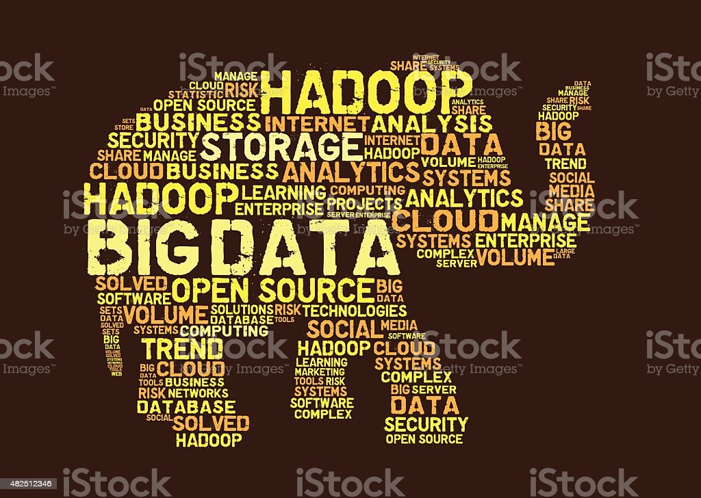

Introduction au Big Data
Le big data est une technique qui permet de collecter, stocker et analyser des données à grande échelle pour en extraire des informations utiles. Il est utilisé dans de nombreux domaines, tels que les finances, la santé, les médias, la sécurité nationale, etc.
Le big data est devenu un outil essentiel pour les entreprises et les organisations qui cherchent à utiliser les données pour prendre des décisions éclairées et améliorer leur performance. Il permet également de découvrir de nouvelles tendances, de comprendre les comportements des consommateurs et de développer de nouveaux produits et services.
Il existe différentes technologies utilisées pour collecter, stocker et analyser les données, comme Hadoop, Spark, NoSQL, etc.Il est important de comprendre ces technologies pour pouvoir utiliser efficacement le big data.
Vous trouverez sur notre site des informations sur les différentes options de formation disponibles pour vous familiariser avec les technologies de Big Data, ainsi que des informations sur les différents types de carrières dans ce domaine. Nous avons également inclus des exemples de projets et de stages pour vous donner une idée de ce à quoi vous pouvez vous attendre si vous choisissez de poursuivre une carrière dans le Big Data.
En outre, nous avons rassemblé des ressources pour vous aider à vous perfectionner dans ce domaine, ainsi qu'une section FAQ pour répondre à certaines des questions les plus courantes sur le Big Data.